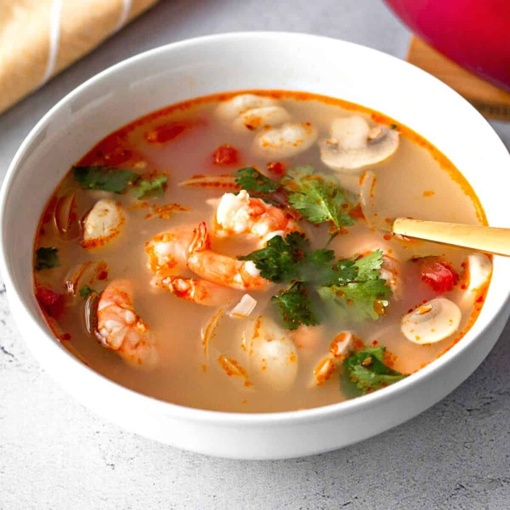

Tom Yum Goong

Description
Tom yum goong is easy to make at home with this recipe. Koong or goong is the Thai word for shrimp, which is featured in this delicious dish. Garnish the soup with fresh cilantro leaves.
Ingredients
- 2 lemongrass stalks
- 1/2 pound medium shrimp - peeled, deveined and shells reserved
- 4 cups water
- 4 makrut lime leaves
- 4 slices galangal
- 4 chile padi (bird's eye chiles)
- 1 1/2 tablespoons fish oil
- 1 1/2 limes, juiced
- 1 tablespoon white sugar
- 1 tablespoon hot chile paste
- 1 tablespoon tom yum soup paste (Optional)
- 12 fresh button mushrooms, halved
- 1 (6 ounce) can whole straw mushrooms, drained
Steps
- Trim lemongrass and cut into matchstick-sized pieces.
- To make the stock: Add reserved shrimp heads and shells to 4 cups water in a pot over medium-low heat; simmer for about 20 minutes. Turn off the heat and let stock sit for another 20 minutes before discarding shells.
- Add stock, lemongrass, lime leaves, galangal, chile padi, fish sauce, lime juice, sugar, chile paste, and tom yum soup paste to a large soup pot; bring to a boil and cook for 5 minutes.
- Lower the heat to medium, then add shrimp, button mushrooms, and straw mushrooms. Simmer until the outsides of shrimp are pink and the centers are opaque, about 10 minutes. Serve immediately.